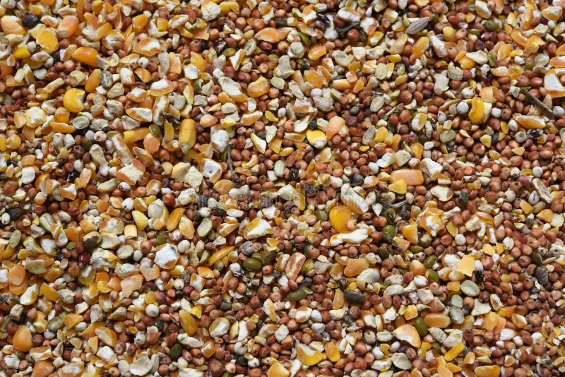
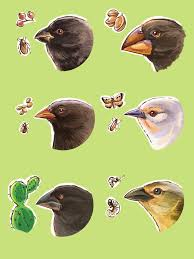
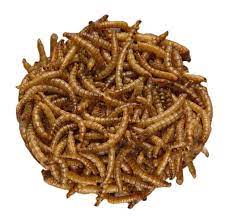
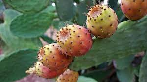
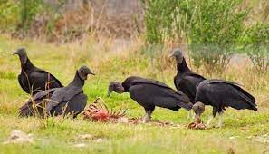

Tipos de Aves
Granivoros
Son especies de aves que se aluimentan de semillas como el mijo, sorgo, maiz, girasol, etc. Poseen pico cónico que les ayuda a partir las semillas.


Omnivoros
Especies de aves que se alimentan de insectos como lombrices, libelulas, mariposas, etc. Tienen picos en punta que les sirve para agarrar insectos en el aire.

Frugivoros
Especies que se alimentan de frutos como el del tala, tuna, nispero,etc. Poseen picos con punta apical que les sirve para desgarrar las frutas.

Carnivoros
Especies de aves que se alimentan de pichones, huevos, roedores animales muertos. Ayudan a controlar las plagas. Poseen picos pronunciados con mucho cuerpo al igual que garras afiladas que les permiten sujetar sus presas.
